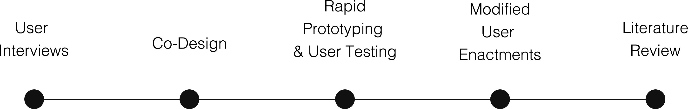
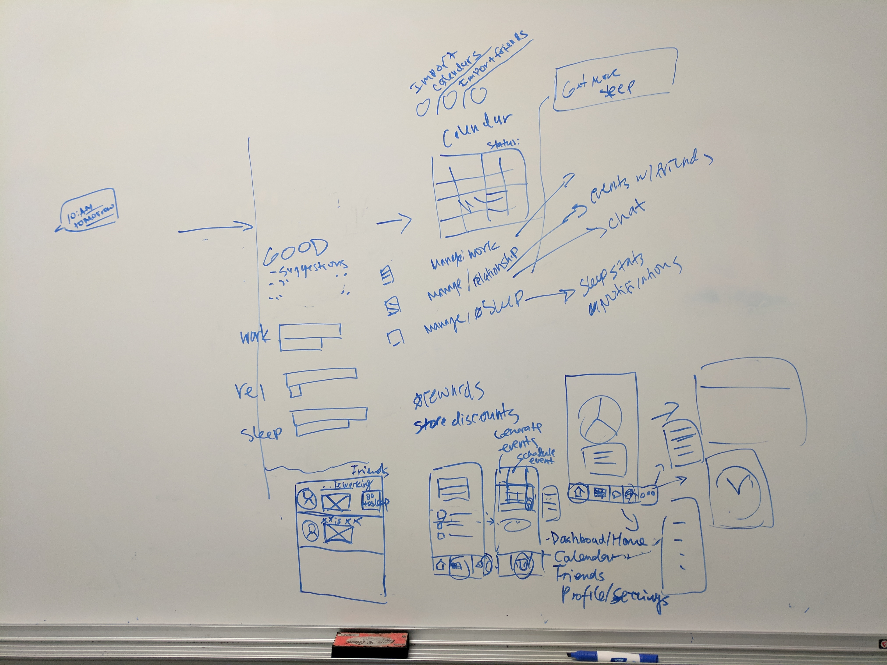
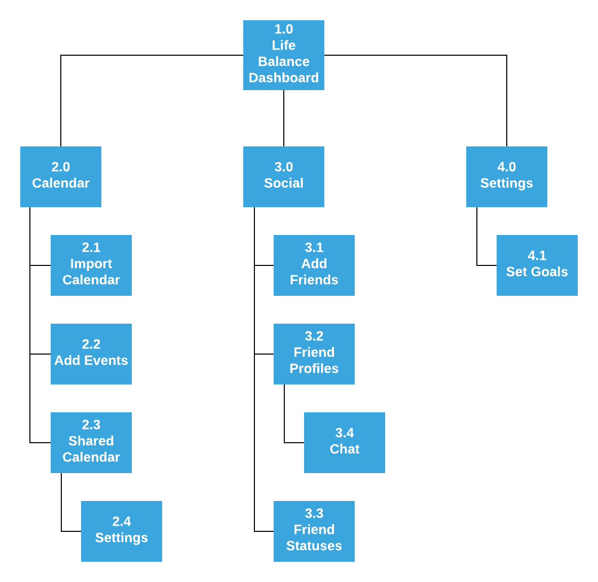
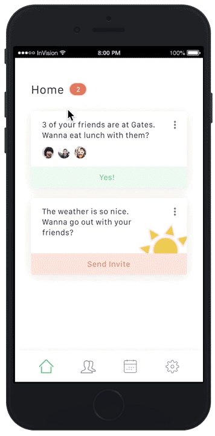
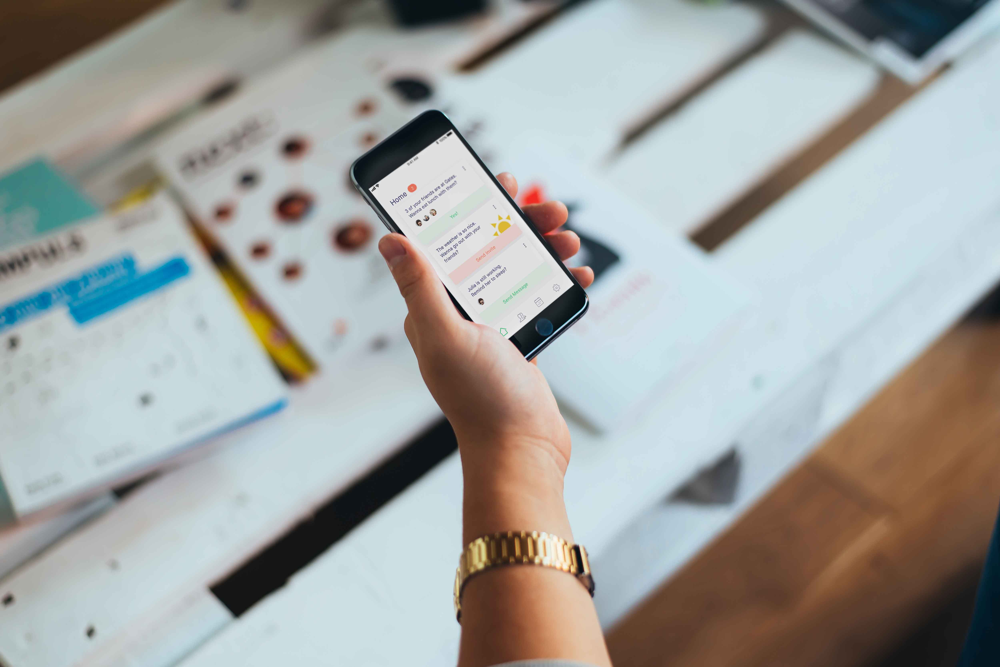

Shared Moments
Shared Moments is a mobile app that promotes mental well-being through social interactions. Through a series of design research methods, our team discovered that social interactions evoke strong positive attitudes. The positive attitudes generated from these interactions can be enough to help individuals feel more empowered and they proceed with stressful situations in their daily lives.
See the final paper
My Design Role
Research Design
Prototyping
User Testing
Literature Review
The Team
3 UX Designers
Deliverables
Low-fidelity Prototype
High-fidelity Prototype
Literature Review
Research Findings
User Testing
Final Paper
Tools
Photoshop
Sketch
Invision
Balsamiq
About the Project
Shared Moments was created as part of an Advanced Human Computer Interaction class at Cornell University. I worked on a team of 3 UX Designers to apply appropriate design research methods in building this solution.
Problems
- Stress is prevalent amongst young adults; it is not uncommon for students and young professionals to experience high levels of stress.
- Not all young adults who experience high levels of stress know enough about mental well-being to maintain it effectively.
Solutions
- Present opportunities for users to spend time with friends and loved ones.
- Evoke positive motions by providing a platform that facilitates small and meaningful interactions with friends and loved ones.
Design Research Methods
User Interviews
We conducted 1:1 interviews with 7 young adults who have recently experienced high levels of stress.
Some believed mental well-being is achieved through a balanced life-style:
“You have a mental balance between everything in your life, work (if you work), your family life and social life”
While others believed mental well-being has more to do with maintaining a positive attitude:
“Mental well-being is not a constant place of peacefulness and harmony, nothing will be fully tranquil in your life. Mental well-being is about having the ability to cope in stressful situations.”
Co-design
We then facilitated a co-design session to help create a product that helps users balance work, social relationships and sleep. Our group of 6 participants were individuals who are actively trying to maintain a healthy balance of these three factors on a daily basis.

Sketches from co-design session

Sketches - calendar screens

Sketches - social screens
The Result
Co-produced a mobile app that combines three major aspects of users’ daily lives: social relationships, sleep and work.
Key features:
Dashboard – visualizes the amount of time allocated to sleep, relationships and work to measure against a users’ “desired balance”
Calendar – keeps track of a user’s daily events, allows social sharing of calendars and labeling events by sleep / relationships / work categories
Social – allows users to connect with friends, share calendars, chat and send friendly reminders to one another
Rapid Prototyping & User Testing

Next, we created a low fidelity Balsamiq prototype of our co-produced product to test on potential users.
Site Mapping
Sketching the site map
The site map
Low fidelity Balsamiq prototype
We recruited 9 young adults who have recently experienced high levels of stress. Short interviews were conducted after each user test to gather additional feedback.

Low-fid Balsamiq screens
Key Findings
Dashboard was confusing to understand and was interpreted differently by everyone and the concept of a balanced life is incredibly subjective and difficult, if not impossible, to quantify
The app tried to accomplish three separate things at once, which led to confusion
The social features however resonated most positively with our participants
Modified User Enactments
The social features in our low-fidelity prototype
showed potential.
Now the question is: to what extent can social
interactions help our users achieve mental well-being? To answer this
question, we designed a modified user enactment study, and used low fidelity props to invoke
reactions to receiving positive messages under stressful situations.
We recruited 3 participants expressing high stress levels due to quickly
approaching final examinations. They were placed in a conference room and
asked to proceed with studying for finals.

Lab used for modified user enactments
Cell phones were placed next to our participants. These cell phones sent the following types of text messages in 15 minute intervals:


Text messages as low-fid props
Key Findings
Participants expressed positive emotions while reading text messages from close friends while studying
Receiving encouraging messages and invitations from friends served as nice reminders that their friends were thinking of them
Sending and receiving social invitations provided something enjoyable to look forward to
Literature Review
We conducted a literature review to further support our decision to use social relationships to facilitate mental well-being.
See the final paper for more details
Key Findings
“Relatedness”, which is important to well-being, can be generated through shared activities that reinforce relationships by creating shared experiences
A study of college dormitories showed a statistically significant positive correlation between interaction with others and feelings of purpose in life
Individuals who provide support to friends and see that their efforts were successful and appreciated experience increased positive emotions and meaning in life
The Final Design
The final design solution is a mobile app that allows users to connect with close friends. The app gathers geo-location and weather data to generate social activities for friend groups. Features include a calendar and chat functions to organize and keep track of group activities.
See the Invision prototype


Final prototype screens
Final prototype
Discussion
Our research started with user interviews to better understand young adults’
relationships with mental well-being. The initial findings were that mental well-being is accomplished
through a balance of work, social relationships and sleep. This was followed by a co-design method
where we collaboratively designed a solution with a team of experts. Based on our co-design sessions,
a low fidelity prototype was produced and user tested. Revelations from user tests led us to shift our
focus on using social relationships to promote mental well-being. We proceeded with modified user
enactments to further understand emotional reactions to sending and receiving positive messages.
Existing literature also strongly supports the notion that social interactions are highly beneficial
for mental well-being.
We see potential in our design -- our participants have expressed feeling strong positive
emotions when receiving encouraging messages from their close friends in stressful moments.
There are however limitations in our research. Some participants expressed discomfort while
receiving notifications to send certain messages to others. This can impact participation
within our app. Further research is necessary to better understand how these notifications
can be better presented.
While our final design is grounded in research, additional research is necessary to measure
the effectiveness of our final design. This can be accomplished through an additional
round of user tests and interviews.